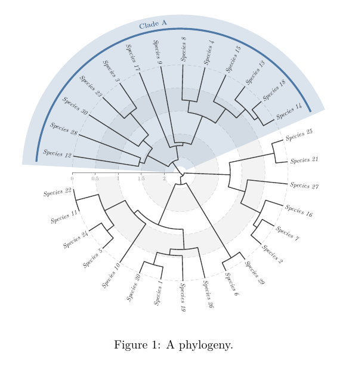

TikZ / LaTeX
Saving to .tikz writes a tikzpicture to \input into a LaTeX document. Saving to .tex writes a standalone document instead.
using PlotPhyloTree, Random
tree = randtree(30; rng=Xoshiro(1), labels=["Species_$i" for i in 1:30])
ladderize!(tree)
p = treeplot(tree; layout=:circular, italic=true, metrics=:lmroman)
highlight!(p, childnodes(tree, rootnode(tree))[1]; label="Clade A")
timescale!(p)
savefig("tree.tikz", p)main.tex:
\documentclass{article}
\usepackage[T1]{fontenc}
\usepackage{lmodern}
\usepackage{tikz}
\usetikzlibrary{decorations.text} % curved clade labels
\begin{document}
\begin{figure}
\centering
\resizebox{0.8\linewidth}{!}{\input{tree.tikz}}
\caption{A phylogeny.}
\end{figure}
\end{document}pdflatex main.tex:

Fonts
The branches, wedges, rings and symbols are drawn where the layout put them. The labels are handed to LaTeX as text, so they are set in the document's font. Change the document's font and the tree's labels change with it.
To set the font for the trees only:
- wrap the picture in a font switch:
{\sffamily\input{tree.tikz}}; - define
\PlotPhyloTreeFontin the preamble to affect every tree, e.g.\newcommand\PlotPhyloTreeFont{\sffamily}; - or pass LaTeX code for one figure:
tikzstring(p; font="\\sffamily").
The layout reserves room for labels before LaTeX sets them, so tell it which font to measure with metrics in treeplot: :lmroman or :lmsans for LaTeX's default Latin Modern, :times, :helvetica (the default), or fontmetrics with your document font's .otf/.ttf file. With the wrong metrics labels still line up, but rings beyond them may sit too close or too far away.
Curved clade labels use TikZ's text along path, so their letters are spaced with the document font's own widths. This needs \usetikzlibrary{decorations.text}. Pass curvedtext=:glyphs to place each letter where the layout put it instead.
Options
tikzstring returns the code as a string. scale multiplies all lengths, font sizes included. A standalone .tex file loads a font matching metrics (TeX Gyre Heros for :helvetica, Latin Modern, or TeX Gyre Termes). Images added with tipimages! are written next to the .tikz file.